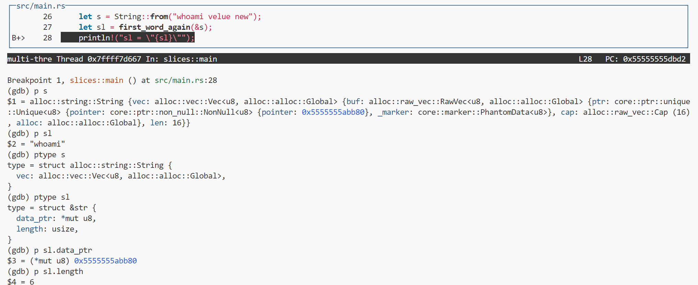
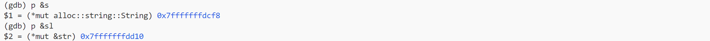
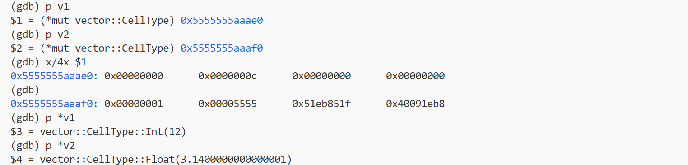
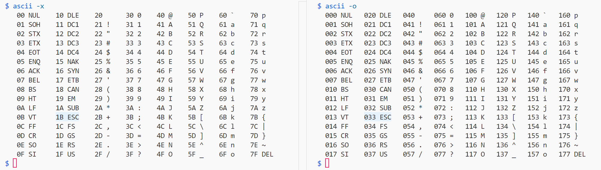

How to debug a Rust program?
$ gdb excutable
Simple example:
Viewing a variable’s address:
Formatted output of p s:
$17 = alloc::string::String {
vec: alloc::vec::Vec<u8, alloc::alloc::Global> {
buf: alloc::raw_vec::RawVec<u8, alloc::alloc::Global> {
ptr: core::ptr::unique::Unique<u8> {
pointer: core::ptr::non_null::NonNull<u8> {
pointer: 0x5555555abb80
},
_marker: core::marker::PhantomData<u8>
},
cap: alloc::raw_vec::Cap (16),
alloc: alloc::alloc::Global
},
len: 16
}
}
Key points: p <variable> p &<variable> ptype <variable>
Ownership issues with dbg! when outputting debug information
Incorrect:
dbg!(var); // move
dbg!(var); // invalid reference
dbg! will take ownership of var (Move), so var can’t be used again.
Correct:
dbg!(&var);
// or
let new_var = dbg!(var);
dbg!(&new_var); // if you want to
Explore with gdb
For things you want to explore, use gdb, for example: [How is enum represented at a low level?] -> Write a simple program, compile it to an executable, then use gdb, using print var print &var x/x <addr> to explore.
About: reference to vector
-
An excerpt from ch08-01
/* CANNOT COMPILE */ let mut v = vec![1, 2, 3, 4, 5]; let first = &v[0]; v.push(6); println!("The first element is: {first}");The code in Listing 8-6 might look like it should work: why should a reference to the first element care about changes at the end of the vector? This error is due to the way vectors work: because vectors put the values next to each other in memory, adding a new element onto the end of the vector might require allocating new memory and copying the old elements to the new space, if there isn’t enough room to put all the elements next to each other where the vector is currently stored. In that case, the reference to the first element would be pointing to deallocated memory. The borrowing rules prevent programs from ending up in that situation.
A question: How to make a Vector appear to store multiple types of data?
Answer: Have the Vector store enums. An enum can have variants of different types, so in a sense, the Vector can store multiple types of data.
fn main(){
let v: Vec<CellType> = vec![
CellType::Int(12),
CellType::Text(String::from("word")),
CellType::Float(3.14),
];
let v1 = &v[0];
}
enum CellType {
Int(i32),
Float(f64),
Text(String),
}
Debugging enums with gdb and using history variables in gdb (and other REPLs)
Source code:
fn main(){
let v: Vec<CellType> = vec![
CellType::Int(12),
CellType::Float(3.14),
];
let v1: &CellType = &v[0];
let v2: &CellType = &v[1];
println!("END");
}
enum CellType {
Int(i32),
Float(f64),
}
Debugging session:
p v1：Prints the value ofv1: &CellType, which is a pointer value, meaning the address where the associated data is stored on the heap. Note that the data corresponding tov1, v2each occupies 16 bytes.x/4x $1：Examines the 16 bytes pointed to byv1.p *v1：Dereferencesv1to view the actual value stored at that memory location.
-
Analysis of how enum is actually stored in memory:
-
The first byte is likely the variant identifier, with the mapping: 0-Int 1-Float
-
Int: Associated data is stored in the second byte,
0x0000000crepresentsInt(12)from the code -
Float: Associated data is stored in the third and fourth bytes
0x40091eb8_51eb851fwhich is the IEEE 754 64-bit representation of 3.14 -
Remaining question: Why are the associated data stored in different positions for these two variants, and what is 0x00005555 in Float?
-
Rediscovering gdb features (history variable)：
The
$xinp varoutput is a history variable for later reuse. Similar REPL behaviors include bash’secho $(ls)and mit-scheme, which also provides referenceable history variables for returned procedures (though those variables are long and contain special characters like #[], so to truly reuse them you still need to copy the identifier and bind it to another identifier for reuse).
RUST_BACKTRACE and command line tips
$ RUST_BACKTRACE=1 cargo run
$ A=12 B=23 echo "$A $B"
You can write temporary environment variables at the leftmost part of the command.
Fancy technique: color escape sequences in Rust’s println
println!("\x1b[34mMESSAGE\x1b[0m");
-
Using
\x1b[34mfor escape sequences -
What is
\x1b?
\xindicates hexadecimal,1bis the ASCII hex code for ESC.
Difference between unwrap and expect in Result<T, E>:
Looking at library function implementations can give you a better understanding of pre-packaged functions. For example, with Result<T, E>’s unwrap and expect, looking at the source code reveals that the difference is in the msg parameter of unwrap_failed (and unwrap_failed is just a wrapper around panic!):
impl<T, E> Result<Result<T, E>, E> {
...
pub fn expect(self, msg: &str) -> T
where
E: fmt::Debug,
{
match self {
Ok(t) => t,
Err(e) => unwrap_failed(msg, &e),
}
}
pub fn unwrap(self) -> T
where
E: fmt::Debug,
{
match self {
Ok(t) => t,
Err(e) => unwrap_failed("called `Result::unwrap()` on an `Err` value", &e),
}
}
...
}
fn unwrap_failed(msg: &str, error: &dyn fmt::Debug) -> ! {
panic!("{msg}: {error:?}")
}